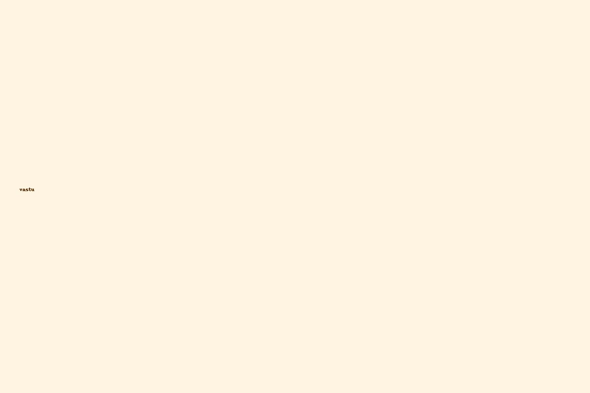
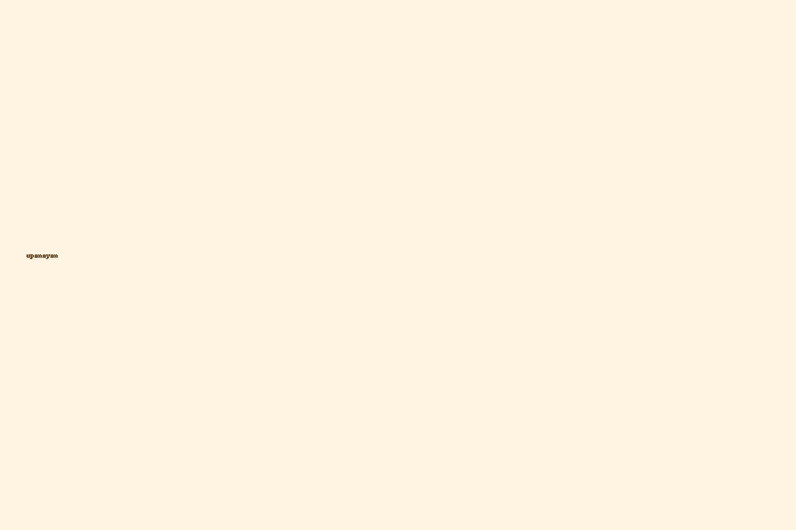

🪔 प्रमुख पूजा
गृहप्रवेश पूजा
नवीन घरात मंगल आणि समृद्धीसाठी पारंपरिक विधी.
सत्यनारायण पूजा
कुटुंबातील समृद्धी व सौख्यसाठी कथा व विधी.

वास्तुशांती
घरातील वास्तुदोष दूर करण्यासाठी पूजन व उपाय.
भूमिपूजन
भूमी पवित्र करण्यासाठी व भवनारंभापूर्वी केले जाणारे पूजन.
🌸 प्रमुख संस्कार
गरभाधान
गर्भधारणासाठी पारंपरिक विधी.
नामकरण
बाळाला शुभ नाव देण्याचा पवित्र संस्कार.

उपनयन
यज्ञोपवीत व धार्मिक शिक्षणाची सुरुवात.
विवाह
विवाहातील पारंपरिक विधी व अनुष्ठान.
📜 मंत्र · श्लोक · स्तोत्रे
ॐ गं गणपतये नमः
गणेश आराधनाः — सर्व विघ्न नाशक.
ॐ त्र्यम्बकं
महा मृत्युंजय — आरोग्य आणि संरक्षणासाठी.
ॐ श्रीं
लक्ष्मी मंत्र — समृद्धीसाठी.